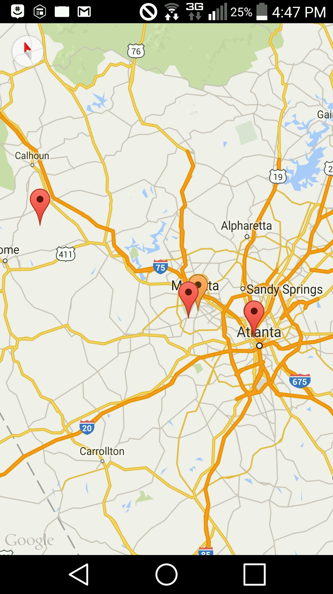

Sample Works
Android Application: Marco Polo

At HackGT, I worked with my teammates to develop an application that allows one to easily meet with his or her friends. The application, MarcoPolo, fetches your location along with your friends' and decides a common meeting point for everyone to convene. We used Google Maps APIs and Location Manager to determine and display GPS location, as well as Parse to store group codes and locations for easy data access and management. To the left is a screenshot from our application. The markers in red are individual locations. The marker in orange is the group meeting point. You can view the project on github here.
iOS Application: Receipt Register
Over the summer, I interned at ADP and stayed on my own in Alpharetta. I wanted to solve a real problem that I had: keeping
track of receipts. Over the course of the summer, I developed an iOS application that used UIViewControllers and models to
display and save receipt data from various dates. I used UITableViewControllers and UINavigationControllers for the interface
of the application, and implemented the
Muscle Ultrasound Imaging: Detecting Digit Movements Using Ultrasound Imaging of Muscle Activity
This project was done over a period of 3 summers in the Biomedical Imaging Lab at George Mason University. The goal of the project was to make a software in MATLAB that would understand physical hand motions based on muscle ultrasound data. I designed experimentation for collecting muscle ultrasound data from a variety of subjects, and synchronized the software with a 3D virtual hand interface to emulate the extent of software comprehension of the hand movement.


Above: Program analysis GUI(left) and virtual program output(right).
This was a winning science fair project in the school district and qualified for the state science fair. My presentation poster of my analysis and results can be seen here. A comprehensive paper on my research with the Virtual Integration Environment can be found here.